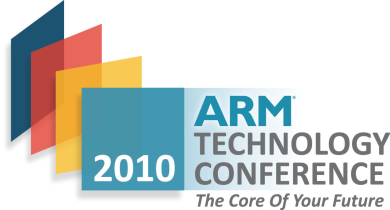

Our History
TechCon began in 2010 as a small gathering of technology enthusiasts.
Over the years, it has grown into one of the most influential
technology conferences worldwide, welcoming thousands of innovators,
engineers, and business leaders annually.

Our Mission
The mission of TechCon is to inspire innovation, foster collaboration,
and empower the next generation of technology leaders. We believe in
breaking barriers, sharing knowledge, and shaping a future where
technology improves lives around the globe.

Notable Past Speakers
Over the years, TechCon has hosted some of the brightest minds in
technology, entrepreneurship, and research.
Michael Lee

Michael Lee is a successful entrepreneur known for founding several
influential startups in cloud computing and cybersecurity.
Abhijit Mahindroo
Specializes in semiconductor, industrial, and automotive strategy
and operations.